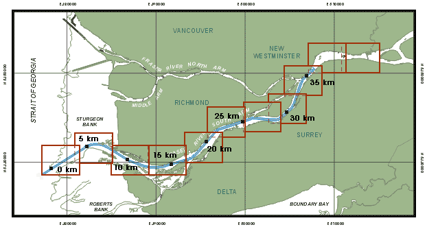

Fraser River - South Arm

Instructions:
Select the criteria.
Click on a red box to display the current velocity and directions.
Copyright © 2000 Department of Fisheries & Oceans
Canadian Coast Guard - Pacific Region